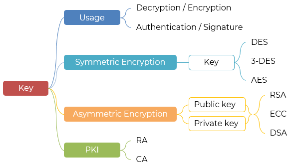
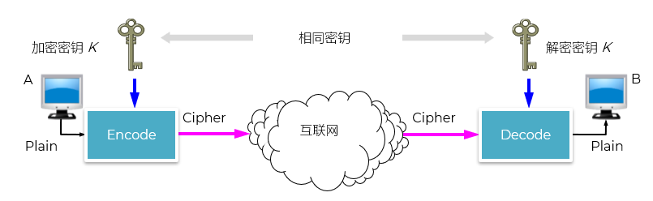
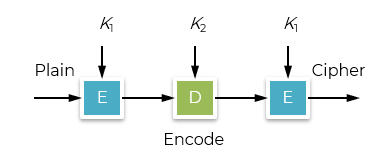
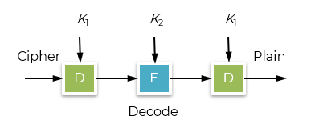
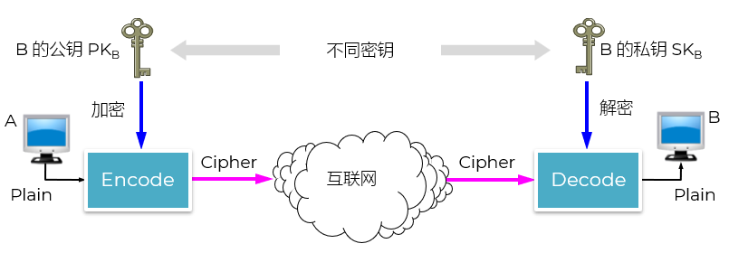
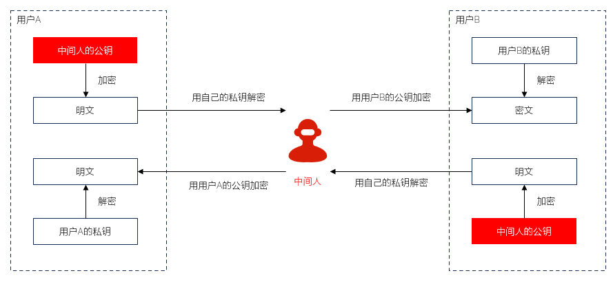

一次对一位或一个字节的数据进行加密
中性能优异、速度快
适合实时加密场景，如流媒体
将数据按固定大小的块进行加密（例如128位的块）
速度通常慢于流密码，但应用极为广泛


分组的运用

私有只有 Alice 自己有
对接收方伪装成发送者
对放送放伪装成接收者

| 特性 | 对称加密 | 非对称加密 |
|---|---|---|
| 密钥数量 | 1 个
加密和解密使用同一密钥 |
2 个
公钥 + 私钥，成对出现 |
| 密钥分发 | 困难
需安全通道预先共享密钥 |
容易
公钥可公开，私钥保密 |
| 加密/解密速度 | 快
适合大数据量 |
慢
计算复杂，通常只用于小数据 |
| 计算资源消耗 | 低 | 高 |
| 安全性依赖 | 密钥保密性 | 私钥保密性 + 数学问题的难解性 |
| 是否支持数字签名 | 否
原生不支持 |
是
私钥签名，公钥验证 |
| 典型算法 | DES 3DES AES Blowfish ChaCha20 |
RSA ECC DSA ElGamal |
| 常见应用场景 | 文件加密 数据库加密 通信数据加密（会话层） |
密钥交换 身份认证 数字签名 SSL/TLS 握手阶段 |
| 密钥管理复杂度 | 高
n 用户需 n(n−1)/2 个密钥 |
低
n 用户只需 n 对密钥 |
| 是否可逆向操作 | 加密/解密互为逆运算 | 公钥加密 → 私钥解密；私钥签名 → 公钥验证 |
Alice wants to send a secret message to Bob
Alice and Bob agree on a secret key
Alice encrypts the plaintext message using the secret key
Alice sends the encrypted ciphertext to Bob
Bob decrypts the ciphertext back into plaintext using the same secret key
Symmetric encryption (or “private key” encryption) is the process of using a single key to both encrypt and decrypt data. It’s called “private key” because the use of a single encryption key necessitates that the key is always kept private.
Asymmetric cryptographic keys are usually used. Public and private keys are always generated as a pair and are mathematically linked to each other. In asymmetric encryption, data encrypted with the first key of a key pair can only be decrypted with the corresponding second key.
A distinction is made between a public and a private key. The public key is freely accessible to everyone in the network. The private key, however, is only known to the owner and is not shared.s
Meet in person to exchange keys
Use asymmetric encryption to send the symmetric key
Use a key exchange protocol like Diffie-Hellman
Rely on a Public Key Infrastructure (PKI) and certificates